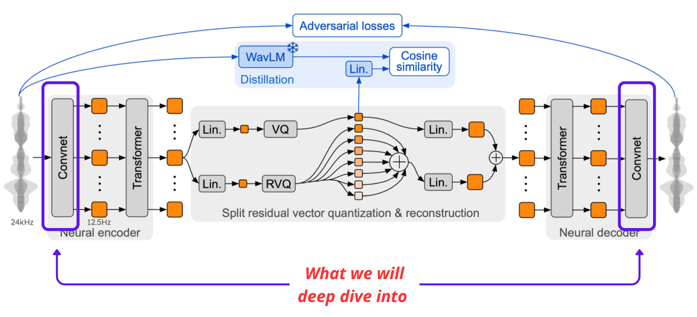
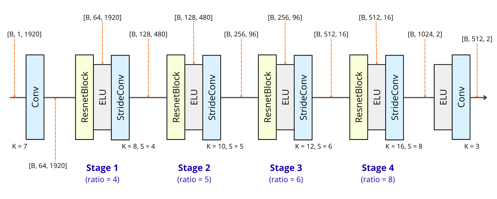
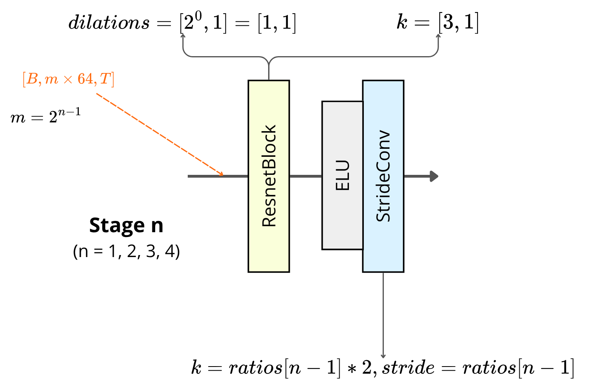
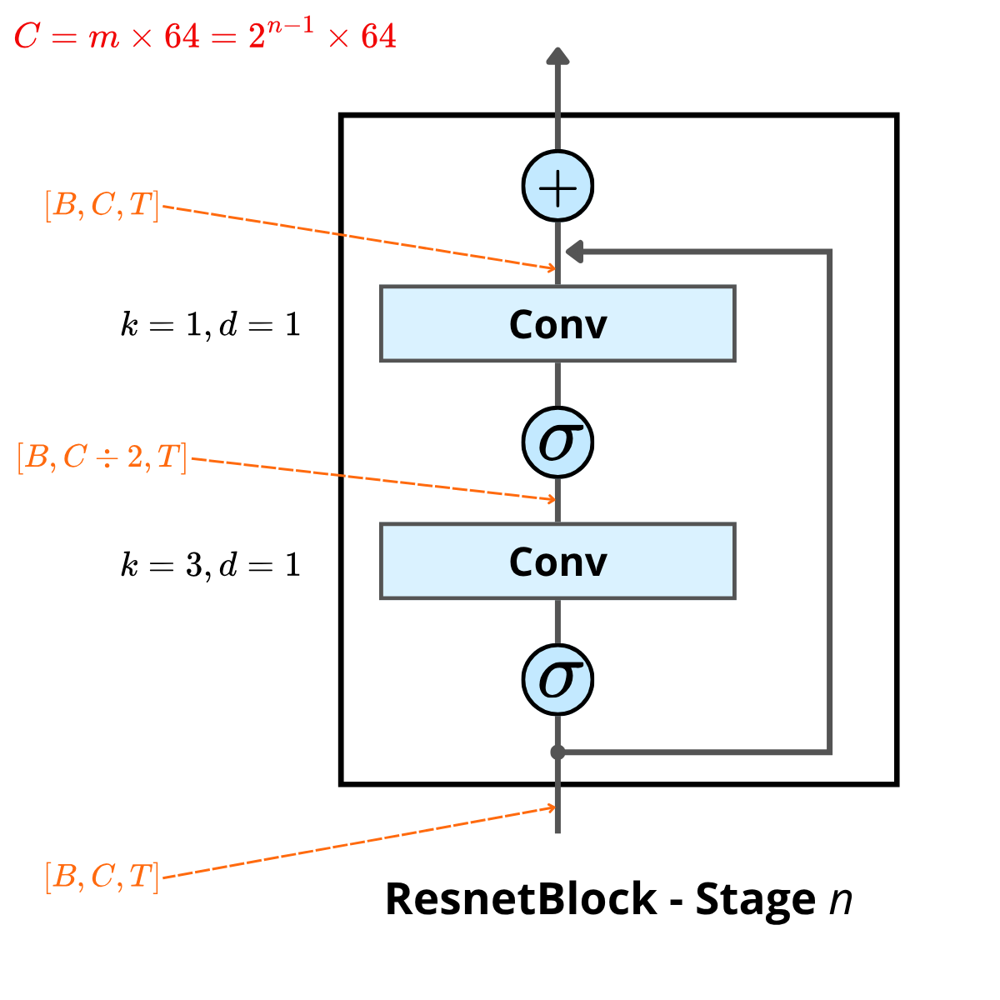

What We Will Deep Dive Into
The Mimi Model features an intricately designed Neural Encoder and Neural Decoder to intelligently manage raw audio streams. The diagram below illustrates how raw 24kHz audio interacts with these networks, utilizing split residual vector quantization and adversarial distillation.

⚠️ Author's Note: The detailed architectural diagrams presented below (ConvNet, Stage $n$, and ResnetBlock) are custom-drawn by me to explicitly visualize the mathematical transformations and tensor shapes. They are not extracted from the official Moshi paper or any other external sources.
The Journey of Audio Compression
The SEANet Encoder is effectively a multi-stage data compression and distillation machine. It takes a raw audio sequence and distills its pure essence.

As visualized in the architecture, the process begins with an initial Conv block mapping
the raw 1D audio shape [B, 1, 1920] (roughly 80ms) to [B, 64, 1920]. From
there, it passes through 4 Main Stages (Stage 1 through 4), adhering to a
fundamental law of information conservation:
The Time-Channel Tradeoff
Starting with exactly 64 information channels, each time data penetrates a subsequent Stage, it is temporally downsampled via sequential ratios ($4, 5, 6,$ and $8$).
Simultaneously to compensate, the channel dimension securely expands, predictably doubling its
size at each step:
\[[B, 64, 1920] \rightarrow [B, 128, 480] \rightarrow [B, 256, 96]
\rightarrow [B, 512, 16] \rightarrow [B, 1024, 2]\]
In the final block, the data passes through an ELU and a k=3 (Kernel size) Conv,
outputting
[B, 512, 2]. The 1920 physical vibrations have been concentrated into just 2
ultra-compressed frames, carrying 512 essential identifying features (such as texture,
tone, and emotion) ready for the language model.
Inside a Processing Stage (Stage $n$)
Within each iteration (for $n = 1, 2, 3, 4$), the processing network relies on a highly calculated series of cascading operations:

The input tensor possesses a shape of [B, m × 64, T], where $m = 2^{n-1}$. It
traverses three distinct operations:
1. The ResnetBlock
Designed to deeply evaluate local acoustic patterns without scaling the time dimension. It is configured with static parameters: \[ \text{dilations} = [1, 1], \quad k = [3, 1] \]
2. ELU + The StrideConv Block
Following a nonlinear Exponential Linear Unit (ELU), the data plunges into the StrideConv. This acts as the sequence's extrusion machine, applying the configuration: \[ k = \text{ratios}[n-1] \times 2, \quad \text{stride} = \text{ratios}[n-1] \] This systematically chops off redundant temporal length mapping the tensor closer to its final frame count.
The Core Refinement Block (ResnetBlock)
Zooming directly into the architecture of the ResnetBlock, we observe a highly intelligent design called the Bottleneck architecture combined seamlessly with a Skip-Connection.
Starting with an input of shape [B, C, T] (where $C = m \times 64 = 2^{n-1}
\times 64$),
the cascading data splits:
-
The Main Processing Branch: Designed to accelerate calculation speeds.
The
first
Conv(with $k=1$, $d=1$) sharply narrows the channels securely in half to exactly[B, C ÷ 2, T]. It passes an ELU activation ($\sigma$), then a second widerConv($k=3$, $d=1$) pumps the channel topology right back up to its original boundary size of[B, C, T], immediately followed by another $\sigma$. - The Skip-Connection Branch: The undisturbed native data flows straight from the block entrance, bypassing transformations.

Final Integration (+): Finally, the distinct results from these two branches are added together. This mechanism inherently acts like a robust safety insurance policy: It guarantees that regardless of how many new features the system attempts to analyze (learn), it never completely loses the core, original tone of the captured voice.